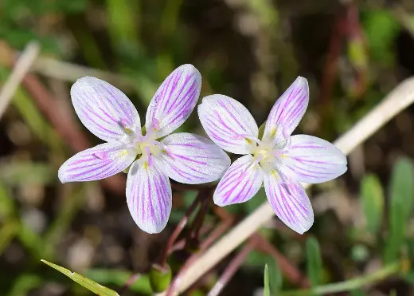

Spring beauty
Spring beauty is a root or shoot you can forage from March to May in Northeast, Southeast and Midwest. Tiny spring ephemeral of woods and lawns with grass-like leaves and pink-striped white flowers; corm like a small potato.

When is spring beauty in season in the United States?
Spring beauty is usually in season March to May. Timing shifts with weather, latitude and altitude.
Where does spring beauty grow in the United States?
Spring beauty grows in Alabama, Arkansas, Connecticut, Delaware, District of Columbia, Florida, Georgia, Illinois, Indiana, Iowa, Kentucky, Louisiana, Maine, Maryland, Massachusetts, Michigan, Minnesota, Mississippi, Missouri, New Hampshire, New Jersey, New York, North Carolina, Ohio, Oklahoma, Pennsylvania, Rhode Island, South Carolina, Tennessee, Texas, Vermont, Virginia, West Virginia, Wisconsin. Regions: Northeast, Southeast, Midwest.
How do you recognise spring beauty?
Tiny spring ephemeral of woods and lawns with grass-like leaves and pink-striped white flowers; corm like a small potato.
How do you harvest spring beauty?
Only dig roots where you have the landowner's permission, since uprooting wild plants is illegal in many places. Take a few from a large patch and backfill the hole.
How do you eat spring beauty?
Corms ('fairy spuds') boiled or roasted; leaves and flowers in salads.
How do you store spring beauty?
Best fresh.
What is spring beauty good for?
Calories, Vitamin C.